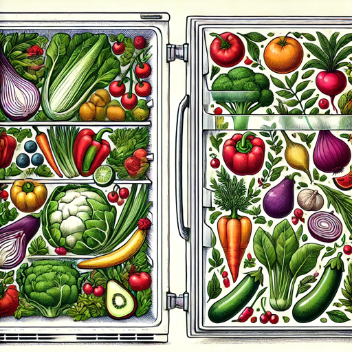

滋賀大学 自主ゼミ オリジナルChatGPTを作ろう！
ようこそ！このサイトでは、滋賀大学の先生方および、南條・飯山ゼミ：ChatGPT研究会が開発した、オリジナルChatGPTの紹介サイトです。ここでは、モデルの基本的な使い方から、研究開発の少し専門的な話まで、すべての情報を1ページで紹介しています。
オリジナルChatGPTとは？
ここで紹介するAIは、一般的なChatGPTとは一味違う、特別な「オリジナルChatGPT」です。
では、何がオリジナルなのでしょうか？ ポイントは大きく2つあります。
- 独自の「知識」を持っています
このAIには、開発者である滋賀大学の先生方・研究会メンバーが、特別な知識情報を与えています。例えば、一般的なAIがまだ知らないような、滋賀大学の講義情報や、お昼ごはん情報など、公開されていない情報も詳しく答えることができます。
- 独自の「対話ルール」が設定されています
さらに、このAIにはあらかじめ「あなたは関西弁を話す、フレンドリーなアシスタントです」といったような、特別な指示（プロンプト）が組み込まれています。これにより、単に情報を提供するだけでなく、利用者にとってより親しみやすく、役に立つような応答が返ってくるように、その振る舞いが調整されています。
この「独自の知識」と「独自の対話ルール」の組み合わせによって、他にはないオリジナリティのある、皆さん専用のChatGPTが実現されています。
滋賀大学のオリジナルGPTs (全体公開用)
 1. 滋賀大学 イベント紹介 ver.2?
1. 滋賀大学 イベント紹介 ver.2?
 4. 高大接続 (試験運用)
4. 高大接続 (試験運用)
 8. 学習用データセット検索
8. 学習用データセット検索
 12. まなぶくん
12. まなぶくん
 14. ゼミ紹介_デモver0.1
14. ゼミ紹介_デモver0.1
滋賀大学のオリジナルGPTs (研究会製作)
1. シラバスgpt (Get夢ナビ neo)
滋賀大生の将来の夢を入力されるとそれに資する授業を提案します。
2. DS研究科研究室紹介（非公式/自主ゼミで作成）
滋賀大学大学院データサイエンス研究科の研究室を紹介をするGPTです
3. てんきおしえてくれるくん
天気を教えます
4. chef
Gpt gives us ideas of dishes.

5. Fridge to Fork
Suggests and explains recipes based on your fridge photos.